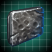
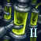
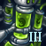
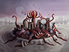
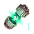
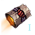
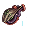
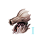
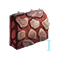

Spaceborne aliens
Spaceborne aliens are non-empire creatures and entities encountered in space. Spaceborne aliens have increased stats based on the difficulty settings.
Space pirates

Space pirates will appear every 10 years for every empire that has a world that produces at least 300  Trade (100
Trade (100  Trade for machine empires) and an unowned system on the empire border. The strength of the pirate fleet depends on how many years have passed since the start of the game.
Trade for machine empires) and an unowned system on the empire border. The strength of the pirate fleet depends on how many years have passed since the start of the game.
| Years | Ships |
|---|---|
| less than 20 | 5 Reaver |
| 40 | 10 Reaver, 2 Brigand |
| 60 | 13 Reaver, 5 Brigand |
| 80 | 13 Reaver, 8 Brigand, 3 Skull |
| 100 | 13 Reaver, 8 Brigand, 7 Skull, 2 Marauder |
| 110 | 13 Reaver, 11 Brigand, 10 Skull, 4 Marauder, 1 Corsair |
| 120 | 13 Reaver, 14 Brigand, 13 Skull, 6 Marauder, 3 Corsair, 1 Cruiser |
| 130 | 13 Reaver, 17 Brigand, 16 Skull, 8 Marauder, 5 Corsair, 2 Cruiser |
| 140 | 13 Reaver, 20 Brigand, 20 Skull, 10 Marauder, 7 Corsair, 4 Cruiser |
| 150 | 13 Reaver, 20 Brigand, 20 Skull, 10 Marauder, 7 Corsair, 5 Cruiser, 1 Battleship |
| 160+ | 13 Reaver, 23 Brigand, 23 Skull, 10 Marauder, 7 Corsair, 5 Cruiser, 2 Battleship |
The first pirate fleet will appear outside empire borders but subsequent pirate fleets will appear within borders, with worlds producing more  Trade being more likely to spawn pirates. If the pirates succeed in disabling the system's starbase, then the system will succumb to the pirate attack and be occupied by a pirate station. The rewards from destroying a pirate station are randomly selected, with a weighting based on the number of years since game start. The table below shows the chance of each reward based on the current game year; all percentages are rounded to one decimal place and so may not sum to 100%
Trade being more likely to spawn pirates. If the pirates succeed in disabling the system's starbase, then the system will succumb to the pirate attack and be occupied by a pirate station. The rewards from destroying a pirate station are randomly selected, with a weighting based on the number of years since game start. The table below shows the chance of each reward based on the current game year; all percentages are rounded to one decimal place and so may not sum to 100%
| Reward Doubled 100 years after game start |
Years since game start | ||||||||
|---|---|---|---|---|---|---|---|---|---|
| <=80 | 80-100 | 101-120 | 121-140 | 141-160 | 161-180 | 181-200 | 201+ | ||
| Small | 47.6% | 39.8% | 32.0% | 24.8% | 18.3% | 12.9% | 8.7% | 5.7% | |
| Medium | 33.3% | 34.8% | 35.1% | 33.9% | 31.3% | 27.6% | 23.4% | 19.0% | |
| Large | 14.3% | 17.9% | 21.6% | 25.1% | 27.8% | 29.5% | 29.9% | 29.1% | |
| Huge | 4.8% | 7.5% | 11.3% | 16.3% | 22.6% | 30.0% | 38.0% | 46.3% | |
Space pirates use the following designs:
| Reaver | Brigand | Skull | Marauder | Corsair | Cruiser | Battleship | Station |
|---|---|---|---|---|---|---|---|
|
|
|
Bemat Thalassocracy
The Bemat Thalassocracy is a hostile pirate fleet that can appear only once after the end-game year is reached. It appears in a system owned by an empire that produces at least 180  Trade. The fleet led by a level 4 Commander with the following ships:
Trade. The fleet led by a level 4 Commander with the following ships:
| 55 corvettes | 48 destroyers | 63 cruisers |
|---|---|---|
|
|
|
Space fauna
Space fauna are entities which may not even classify as ships or life in the common meaning of those words. They generally inhabit a certain area of space and are seldom seen away from it. Some are peaceful unless provoked, while others are inherently hostile. If killed, space fauna slowly respawns in their home system.
Tiyanki
| “ | Tiyanki, also known as "Space Whales", are typically docile creatures that graze on atmospheric gasses. These creatures are extremely collaborative and pods in the wild are organized under a strict hierarchy.
— In-game description
|
” |
The Tiyanki are peaceful migratory space fauna. Completing the  First Contact with them will unlock the
First Contact with them will unlock the  Frequency Tuning technology.
Frequency Tuning technology.
The Tiyanki have two home systems:
- The first is called Tiyana Vek. It contains 4 Gas Giants that have a deposit of
 6 Society each and the star has a deposit of
6 Society each and the star has a deposit of  6 Physics.
6 Physics. - The second is called Tiyun Ort. Its various celestial object deposits produce 6 Physics and
 3 Volatile Motes. The ice asteroid Zhaduva contains a level 3 anomaly that will add another deposit of 3 Society. The unique world Orek Vuul contains the
3 Volatile Motes. The ice asteroid Zhaduva contains a level 3 anomaly that will add another deposit of 3 Society. The unique world Orek Vuul contains the  archaeology site Tiyanki Grave Mound.
archaeology site Tiyanki Grave Mound.
Tiyanki come in 4 growth stages. With  Grand Archive DLC, they can be cloned using
Grand Archive DLC, they can be cloned using  Food.
Food.


If an empire kills the last Tiyanki fleet and the Enigmatic Observers fallen empire is present, the empire gains a temporary  −100 Opinion with them.
−100 Opinion with them.
Crystalline entities
| “ | Crystalline Entities are a unique form of silicate-animate beings that can freely propel themselves through space. The hue of each entity varies not due to age, but as a reflection of their latent internal charge.
— In-game description
|
” |
Crystalline Entities keep to their systems until the Mid-Game year is reached, at which point they can expand. Once the  First Contact is completed, the empire will be offered the following choices:
First Contact is completed, the empire will be offered the following choices:
- All empires can choose to gain a special project that costs 1500 Physics Research. Once completed, it will grant a choice between the Crystal Focus empire modifier or the
 Crystal-Infused Plating technology.
Crystal-Infused Plating technology. - Empires that are Militarist, Xenophobe or can choose to gain the Crystal Hunter empire modifier.
 Genocidal Fanatic Purifiers
Genocidal Fanatic Purifiers Devouring Swarm Devouring Swarm Terravore Devouring Wilderness
Devouring Swarm Devouring Swarm Terravore Devouring Wilderness Determined ExterminatorScorched World Heralds
Determined ExterminatorScorched World Heralds Scorched World Heralds
Scorched World Heralds Pyromanic Instinct
Pyromanic Instinct - Empires that are Pacifist or value otherscan gain a special project that costsXenophile
 Empath
Empath Familiar Face
Familiar Face Rogue Servitor
Rogue Servitor Exploration Protocols
Exploration Protocols Fruitful Partnership
Fruitful Partnership
 Animal Handler stance Symbiotic Partnership stance 5000 Physics Research and renders Crystalline Entities non-aggressive towards them and unlocks the Crystal-Infused Plating technology as a permanent research option.
Animal Handler stance Symbiotic Partnership stance 5000 Physics Research and renders Crystalline Entities non-aggressive towards them and unlocks the Crystal-Infused Plating technology as a permanent research option.
The Crystalline Entities home system is a Pulsar that contains the Crystal Nidus, a large crystalline structure guarded by 4 elite fleets. Destroying the Crystal Nidus unlocks the  Crystal-Forged Plating technology.
Crystal-Forged Plating technology.
Crystalline Entities come in 3 growth stages. With  Grand Archive DLC, they can be cloned using
Grand Archive DLC, they can be cloned using  Minerals and
Minerals and  Rare Crystals. While the Crystal Nidus can be captured with Gravity Snares, it cannot be cloned and is otherwise treated a regular Entity for Vivarium purposes.
Rare Crystals. While the Crystal Nidus can be captured with Gravity Snares, it cannot be cloned and is otherwise treated a regular Entity for Vivarium purposes.


Space amoeba
| “ | Space Amoeba are lone predators, aggressive towards anything they encounter. Supported by partially-formed spawn known as "flagella", these creatures are adept at chasing down their prey.
— In-game description
|
” |
Space Amoeba are migratory space fauna. Once the  First Contact is completed, the empire will be offered the following choices:
First Contact is completed, the empire will be offered the following choices:
- All empires can choose to gain a Special Project that costs 1500 Society Research. Once completed, it will grant a choice between the Flagellating Movement empire modifier or the
 Regenerative Hull Tissue technology.
Regenerative Hull Tissue technology. - Empires that are Militarist, Xenophobe or can choose to gain the Amoeba Hunter empire modifier. Genocidal Fanatic Purifiers Devouring Swarm Devouring Swarm Terravore Devouring Wilderness Determined ExterminatorScorched World Heralds Scorched World Heralds Pyromanic Instinct
- Empires that are Pacifist or value otherscan gain a special project that costsXenophile Empath Familiar Face Rogue Servitor Exploration Protocols Fruitful Partnership Animal Handler stance Symbiotic Partnership stance 5000 Physics Research and renders Space Amoeba non-aggressive towards them and unlocks the Regenerative Hull Tissue technology as a permanent research option.
The Space Amoeba home system is called Amor Alveo and is guarded by 7 Space Amoeba fleets. Its various celestial object deposits produce in total  8 Energy,
8 Energy,  12 Minerals,
12 Minerals,  6 Society,
6 Society,  3 Exotic Gases,
3 Exotic Gases,  3 Volatile Motes and
3 Volatile Motes and  2 Rare Crystals.
2 Rare Crystals.
If the Galactic Community is formed, the Space Amoeba pacification modifier can be offered to all members by passing  Space Amoeba Protection Act, but the resolution can only be proposed by empires which already pacified them.
Space Amoeba Protection Act, but the resolution can only be proposed by empires which already pacified them.
Space Ameoba come in 2 growth stages. With  Grand Archive DLC, they can be cloned using
Grand Archive DLC, they can be cloned using  Food.
Food.


Voidworms
|
|
Available only with the Grand Archive DLC enabled. |
| “ | Voidworms are parasitic organisms that must deposit spores on inhabited worlds with suitable biomass in order to reproduce. Mature individuals form mating trios, known as "Troikas", and will construct nests near black holes to shelter and raise their young.
— In-game description
|
” |

Voidworms spawn in a single system and will slowly multiply, the speed depending on galaxy settings. Once the  First Contact is completed, the empire will be offered a choice between the Voidworms Hunter empire modifier or a special project that costs
First Contact is completed, the empire will be offered a choice between the Voidworms Hunter empire modifier or a special project that costs  5000 Society Research and gives a choice between the Voidworm Enzymes empire modifier or the
5000 Society Research and gives a choice between the Voidworm Enzymes empire modifier or the  Voidworm Immunity technology as a research option.
Voidworm Immunity technology as a research option.
Voidworm adults do not grow beyond the age of 65. Instead, if 3 Voidworm Adults of age 65 are in the same fleet or the Vivarium, they will fuse into a Voidworm Troika, which can use the  Voidworm Spores orbital bombardment.
Voidworm Spores orbital bombardment.
The Voidworms home system is a Black Hole with 3 Toxic Worlds with a deposit of 1  Dark Matter on each. It contains 3 nests, 3 Adults which will soon merge into a Troika, 9 Juveniles and 9 Nymphs. Juveniles travel across the galaxy up to 25 hyperlanes away from the home system while Nymphs will stay in the home system. The nests will periodically spawn voidworms depending on galaxy settings. If
Dark Matter on each. It contains 3 nests, 3 Adults which will soon merge into a Troika, 9 Juveniles and 9 Nymphs. Juveniles travel across the galaxy up to 25 hyperlanes away from the home system while Nymphs will stay in the home system. The nests will periodically spawn voidworms depending on galaxy settings. If  Toxoids is installed, the Toxic Worlds will have the
Toxoids is installed, the Toxic Worlds will have the 
 Toxic Terraforming Candidate modifier.
Toxic Terraforming Candidate modifier.
For the first 35 years, voidworms are not aggressive unless attacked. After 35 years have passed, they will become aggressive towards any empire within 20 hyperlane jumps of their nest. Any planet with at least 1000 pops can be targeted by a Voidworm Troika, which will try to bombard the planet until 300 pops are killed (100 on Civilian difficulty). Afterwards the same empire cannot be attacked again for 25 years.
Voidworms come in 4 growth stages. They can be cloned using  Food and
Food and  Minerals.
Minerals.


Voidworm plague
The Voidworm Plague is a crisis that can take place while there are any Voidworm Nests remaining after the mid-game start year. The chance ranges from 1% to 50% each year, depending on the number of Voidworms present in the galaxy above a certain minimum defined by galaxy settings.
If a Voidworm Plague takes place, all Voidworms will become hostile and 3 times more powerful. Their bombardment will no longer end at the last 1000 Pops and the  Voidworm Immunity technology will no longer protect against it. 3 additional Voidworm Troikas will spawn in their home system. Every year, each Voidworm Nest will spawn 9 Nymphs, 6 Juveniles, 3 Adults and 3 Troikas. Voidworms will reach the next growth stage 3 times faster in their home system. Each empire will gain the Voidworm Plague situation. Any empire that completes the situation will no longer be invaded by Voidworms.
Voidworm Immunity technology will no longer protect against it. 3 additional Voidworm Troikas will spawn in their home system. Every year, each Voidworm Nest will spawn 9 Nymphs, 6 Juveniles, 3 Adults and 3 Troikas. Voidworms will reach the next growth stage 3 times faster in their home system. Each empire will gain the Voidworm Plague situation. Any empire that completes the situation will no longer be invaded by Voidworms.
The empire that destroys the last Voidworm Nest after the Voidworm Plague took place will gain the  Voidworm Heart specimen.
Voidworm Heart specimen.
Cutholoids
|
|
Available only with the Grand Archive DLC enabled. |
| “ | Cutholoids are massive organisms that inhabit asteroids in order to provide suitable protection for their otherwise soft bodies. This creature swallows its prey whole, using radioactive digestive fluid to slowly consume its prey.
— In-game description
|
” |
Cutholoids are spaceborne aliens hidden in asteroids belts. They will not spawn in systems bordering an empire's home system. The more Asteroids the system has, the more likely it is to contain Cutholoids. Cutholoids will respawn if too many of them are killed. How many systems will contain Cutholoids as well as how few they have to be to begin respawning depends on galaxy settings.
The first time an asteroid hiding a Cutholoid is surveyed, it will swallow the science ship and its leader unless the science ship is cloaked. A choice of two special projects, with different requirements and outcomes, with a time limit of 5 years will be issued to recover them:
- A fleet with at least 600 Fleet Power. This project takes 10 days before the Cutholoid will attack the fleet, killing it leaves behind debris that gives either 1000
 Minerals or 200
Minerals or 200  Rare Crystals. The rescued leader has a 50% chance to gain the
Rare Crystals. The rescued leader has a 50% chance to gain the 

 Cutholoid Victim trait.
Cutholoid Victim trait. - A science ship and the
 Gravity Snares technology. This project takes 6 months before the Cutholoid will automatically be captured and
Gravity Snares technology. This project takes 6 months before the Cutholoid will automatically be captured and  First Contact will be completed.
First Contact will be completed.
Subsequent surveys of an asteroid hiding a Cutholoid will cause the science ship to go MIA unless it is cloaked.
Once the  First Contact is completed, the empire will be offered a choice between the Cutholoid Hunter empire modifier or a special project that costs
First Contact is completed, the empire will be offered a choice between the Cutholoid Hunter empire modifier or a special project that costs  2000 Engineering Research and gives a choice between the Space Fauna Ship Armor empire modifier or the
2000 Engineering Research and gives a choice between the Space Fauna Ship Armor empire modifier or the
Cutholoids come in 3 growth stages. They can be cloned using  Minerals.
Minerals.


Cloned Cutholoids will use their Devouring Maws in combat every 300 days. The weapon only affects enemies smaller than the Cutholoid and cannot target other Cutholoids. Targeted space fauna will be devoured for their resources while ships will be taken control of. Devouring Maws will always target the largest ship it can devour. The ability is lost if the Chutholoid is given a Gastric Fountain mutation.
Capturing space fauna

|
|
Available only with the Grand Archive DLC enabled. |
Space fauna can be captured using Gravity Snares, which are unlocked by researching the technology with the same name. Gravity Snares can be launched by science ships every 80 days, requires the ship to travel to an adjacent system and cost 300  Energy and 75
Energy and 75  Alloys per use. The success chance of each gravity snare is 10% per skill level of the science ship
Alloys per use. The success chance of each gravity snare is 10% per skill level of the science ship  Scientist. If the Gravity Snare is fired from the galaxy map, it will always target the oldest space fauna in the selected system. Finishing first contact with a space fauna is necessary to use Gravity Snares on it. Each Gravity Snare will capture one space fauna, with the amount increased by one for each of the following technologies:
Scientist. If the Gravity Snare is fired from the galaxy map, it will always target the oldest space fauna in the selected system. Finishing first contact with a space fauna is necessary to use Gravity Snares on it. Each Gravity Snare will capture one space fauna, with the amount increased by one for each of the following technologies:
 Micro Singularity Enhancements
Micro Singularity Enhancements Gravity Manipulation Optimization
Gravity Manipulation Optimization Containment System Improvement
Containment System Improvement
Captured space fauna are stored in the Vivarium. Mature space fauna in the Vivarium will reproduce at regular intervals as long as there is sufficient room. Tiyanki and Voidworms require mates while Space Amoeba, Crystalline Entities and Cutholoids do not. Vivarium Capacity is capped at 1000.
Captured space fauna can be culled to obtain resources and Genetic Material based on their rarity. If there is no room for newly-captured space fauna in the Vivarium, they are automatically culled.
Voidlures
A starbase with  Voidlure building will attract a fauna fleet of the corresponding type every 5 years. The attracted fauna will linger over the starbase for 1 year, before reverting to standard behaviour of regular wild fauna (passive roaming for Tiyanki, turning hostile for everything else unless pacification is unlocked via first contact project). Military fleets can be ordered to attack the lured fauna, and gain resources based on numbers killed.
Voidlure building will attract a fauna fleet of the corresponding type every 5 years. The attracted fauna will linger over the starbase for 1 year, before reverting to standard behaviour of regular wild fauna (passive roaming for Tiyanki, turning hostile for everything else unless pacification is unlocked via first contact project). Military fleets can be ordered to attack the lured fauna, and gain resources based on numbers killed.
Unlike  Garden building that attracts existing wild fauna, the
Garden building that attracts existing wild fauna, the  Voidlures spawn new fleets of wild fauna, making them a sustainably renewable resource.
Voidlures spawn new fleets of wild fauna, making them a sustainably renewable resource.
The lured fauna fleets consist of:
- Tiyanki: 2 Bulls, 1 Cow, 4 Caifs
- Amoeba: 4 Space Amoeba Mother, 2 Space Amoeba
- Cutholoid: 1 mature Cutholoid
- Crystallines: 4 Quintessences, 2 Shards, 1 Shardling
- Voidworms: 1 Voidworm Adult, 3 Voidworm Juveniles
Cloning
Once the Genetic Material of a space fauna species has been obtained, the space fauna can be cloned at starbases with the required modules. Cloning space fauna in the first growth stage requires the   Artificial Breeding technology, cloning space fauna in the second growth stage requires the
Artificial Breeding technology, cloning space fauna in the second growth stage requires the
Cloned space fauna have reduced upkeep if they are orbiting their preferred habitat. Tiyanki prefer Gas Giants, Space Amoeba prefer Nebulas, Crystalline Entities prefer Pulsars, Voidworms prefer Black Holes and Cutholoids prefer asteroids.
Cloned space fauna will grow just like Vivarium space fauna. Each time a cloned space fauna reaches the next growth stage, it will update to the design matching the new growth stage. Hovering over a space fauna in the fleet menu will display the remaining time until it reaches the next growth stage.
Genetic Material comes in 4 levels of rarity, which increases the stats of cloned space fauna.
| Common | Rare | Epic | Exceptional | |
|---|---|---|---|---|
| Effects |
|
|
| |
| Capture chance (without |
80% | 15% | 4% | 1% |
| Capture chance (with |
69.5% | 23% | 6% | 1.5% |
| Breeding result |
|
|
|
|
Empires that cloned 50 space fauna of a certain species after researching the  Advanced Controlled Mutations technology will receive a special project. Completing it unlocks a mutation that can only be used on that particular space fauna species.
Advanced Controlled Mutations technology will receive a special project. Completing it unlocks a mutation that can only be used on that particular space fauna species.
Seed pods
|
|
Available only with the Plantoids DLC enabled. |
Non-hostile space fauna fleets that feed at starbases or orbital rings with a  Garden building are loaded with
Garden building are loaded with  Seed Pods. Hovering over a space fauna fleet that carries
Seed Pods. Hovering over a space fauna fleet that carries  Seed Pods on the galaxy map or selecting it shows a
Seed Pods on the galaxy map or selecting it shows a  Seed Pods icon. Space fauna can carry the seeds from multiple
Seed Pods icon. Space fauna can carry the seeds from multiple  Fruitful Partnership empires, in which case whose seeds make planetfall is determined at random. When a fleet with
Fruitful Partnership empires, in which case whose seeds make planetfall is determined at random. When a fleet with  Seed Pods orbits a habitable planet, the following happens:
Seed Pods orbits a habitable planet, the following happens:
- If the planet is uncolonized, it gains the

 Dormant Seed Pods modifier and the owner of the starbase or orbital ring where the space fauna fleet fed gains an Open Seed Pods special project. The project costs
Dormant Seed Pods modifier and the owner of the starbase or orbital ring where the space fauna fleet fed gains an Open Seed Pods special project. The project costs  3000 Energy and takes a month to finish. Finishing it colonizes the planet. The opportunity is lost if another empire colonizes the planet.
3000 Energy and takes a month to finish. Finishing it colonizes the planet. The opportunity is lost if another empire colonizes the planet. - If the planet is colonized by another empire before or after the seeds are dropped, the colony gains 100 Pops from the founder species of the Fruitful Partnership empire and a modifier that grants colony bonuses but gives all empires with the Fruitful Partnership origin at war with the planet's owner a special project that costs 500 Energy to summon armies on the planet. The empire owning the colony gains
 +50 opinion with the Fruitful Partnership empire. If the two empires did not complete a First Contact, they instantly establish communications.
+50 opinion with the Fruitful Partnership empire. If the two empires did not complete a First Contact, they instantly establish communications. - If the planet is colonized by the Fruitful Partnership empire with a colony ship, it gains an 100 Pops.
- Habitable megastructures cannot be seeded.
Ancient mining drones

Ancient Mining Drones keep to their systems until the Mid-Game year is reached, at which point they can expand. Once the  First Contact is completed, the empire will be offered a choice between the Drone Destroyer empire modifier or a special project that costs
First Contact is completed, the empire will be offered a choice between the Drone Destroyer empire modifier or a special project that costs  5000 Engineering Research and gives the Drone Mining Techniques empire modifier.
5000 Engineering Research and gives the Drone Mining Techniques empire modifier.
The Ancient Mining Drones home system contains 14 mining stations, each guarded by a fleet of 5 drones, and the Home Base Ore Grinder, which is guarded by 20 destroyers and 30 drones. Destroying the Home Base Ore Grinder grants  4000 Minerals and
4000 Minerals and  500 Alloys.
500 Alloys.
- If
 Ancient Relics DLC is enabled, it also grants the
Ancient Relics DLC is enabled, it also grants the  Surveyor relic.
Surveyor relic. - If
 The Machine Age DLC is enabled, there is a 25% chance for the system to spawn with a Ruined Arc Furnace.
The Machine Age DLC is enabled, there is a 25% chance for the system to spawn with a Ruined Arc Furnace.
The Ancient Mining Drones use regular ship components. The Mining Drone Lasers can be reverse-engineered.
| Mining Drone | Combat Drone | Destroyer | Base |
|---|---|---|---|


Void clouds
The Void Clouds never expand, beyond their starting systems. Once the  First Contact is completed the empire will be offered a choice between the Cloud Destroyer empire modifier or a special project that costs
First Contact is completed the empire will be offered a choice between the Cloud Destroyer empire modifier or a special project that costs  1500 Physics Research and gives the Void Loops empire modifier.
1500 Physics Research and gives the Void Loops empire modifier.
The Void Clouds home system is called Great Wound, a Black Hole cluster guarded by 3 Void Clouds. The central Black Hole contains a deposit of 10  Dark Matter.
Dark Matter.
The  Cloud Lightning Conduits technology can be reverse-engineered from destroyed Void Clouds.
Cloud Lightning Conduits technology can be reverse-engineered from destroyed Void Clouds.
VLUUR
VLUUR is a powerful migrating Void Cloud that has around 32K fleet power and is armed with 8  Cloud Lighting weapons. For as long as VLUUR is in a system, it creates a storm that causes
Cloud Lighting weapons. For as long as VLUUR is in a system, it creates a storm that causes  −50% sublight speed and
−50% sublight speed and  −15% fire rate on ships. VLUUR moves to a new system every 4-7 years.
−15% fire rate on ships. VLUUR moves to a new system every 4-7 years.
VLUUR is not hostile but can be attacked. It has powerful shields and high evasion, but low hull, and can be defeated deceptively easily with missile weapons. Defeating VLUUR grants  100 dark matter, and creates various deposits of
100 dark matter, and creates various deposits of  1-3 dark matter on up to 4 planets in the system it is defeated in.
1-3 dark matter on up to 4 planets in the system it is defeated in.
Ghost Ship
The Ghost Ship is a neutral science ship which can be found patrolling the Hillos system, which is guaranteed to spawn in all games. Encountering it leads to its own  First Contact, though unlike other spaceborne entities, it is the only one of its kind in the galaxy.
First Contact, though unlike other spaceborne entities, it is the only one of its kind in the galaxy.
Surveying the Tundra World in the system uncovers the Strange Debris anomaly which, when investigated, leads to a special project which takes 360 days to complete. Researching it reveals the true nature of the Ghost Ship and rewards a moderate amount of  physics research. Should the empire have gone for the
physics research. Should the empire have gone for the  Psionics tradition, it will receive extra flavor text from being able to communicate with the entity.
Psionics tradition, it will receive extra flavor text from being able to communicate with the entity.
The Ghost Ship itself is identical to a normal science ship. If attacked, it will simply be destroyed without consequence.
Galactic nomads

The Galactic Nomads, or Namarians as they call themselves, are a passive millennia-old intergalactic race with no homeworld, forever traveling the void in their starships. Once they establish communications with an empire, the Galactic Nomads help establish communications between any encountered empires that haven't discovered each other yet. They travel from system to system during their temporary stay in the galaxy, and eventually set sail for another galaxy. Events related to them can take place during their stay.
The date when and if the Galactic Nomads arrive is determined at game start, with the following chances per human player:
- 20% chance to appear after 7,300 to 7,800 days (roughly 20.28 to 21.67 years)
- 25% chance to appear after 14,600 to 15,100 days (roughly 40.56 to 41.94 years)
- 25% chance to appear after 20,075 to 20,575 days (roughly 55.76 to 57.15 years)
- 30% chance to not trigger (they may still appear if another human player rolls them)
If more than one player triggers the Galactic Nomads, they spawn a single time on the earliest date.
When they arrive, the Galactic Nomads spawn in a random non-hostile rim system that no regular empire has more than  low intel on. Upon appearing, they decide the midpoint and endpoint systems of their journey.
low intel on. Upon appearing, they decide the midpoint and endpoint systems of their journey.
- Midpoint: A random non-hostile system with a distance of 250 to 500 from their starting system. If no such system exists, they choose a system with a distance of 150 to 500, whether or not it's hostile.
- Endpoint: A random rim system with a distance of 400 to 1450 from their starting system. If no such system exists, they choose a system with a distance of 250 to 1450.
On their journey, Galactic Nomads perform an action on entering a system. Those actions depends on if the system has an owner and what their relationship with the owner is. If the system is owned by an empire they haven't contacted and isn't hostile to them, they start orbiting a random planet in the system until contact is established. The system owner is unable to decipher their communications, but contact is always established after 100 days. After contact is established, they send the owner a request. If they enter another system owned by the same empire, they roll for a request again. Each interaction has the following chances:
- 30% – Ask to leave some pops on an owned planet within the empire's borders. If the empire agrees, 300
 Egalitarian Namarian pops spawn on a random
Egalitarian Namarian pops spawn on a random  Arid,
Arid,  Desert, or
Desert, or  Savannah colony. A colony is 6 times as likely to be chosen if it has more than 0 free housing and 11 times as likely to be chosen if it has more than 1 free housing. Namarians are immortal and have the
Savannah colony. A colony is 6 times as likely to be chosen if it has more than 0 free housing and 11 times as likely to be chosen if it has more than 1 free housing. Namarians are immortal and have the  Desert Preference,
Desert Preference,  Migratory,
Migratory,  Venerable, and
Venerable, and  Natural Engineers traits. If the
Natural Engineers traits. If the  Grand Archive DLC is installed this will give the
Grand Archive DLC is installed this will give the  Namarian Sculpture specimen.
Namarian Sculpture specimen.
- ×0 If the system owner does not have a colony on a Dry planet
- ×0 If the system owner is a
 Hive Mind
Hive Mind - ×0.75 If they've already left pops with the system owner
- ×1.5 If they haven't left pops with the system owner yet and the system owner is some degree of Xenophile, Egalitarian, or Spiritualist
- ×0.3 If the system owner's slavery
 policy is set to Allowed
policy is set to Allowed
- 30% – Ask for an uncolonized planet to colonize, forming a new empire. If the empire agrees, they gain
 150 to 300 influence and a random uncolonized Arid, Desert,
150 to 300 influence and a random uncolonized Arid, Desert,  Tropical,
Tropical,  Ocean, or
Ocean, or  Gaia world within their borders becomes the capital of a new single-system Namarian empire. The new empire has
Gaia world within their borders becomes the capital of a new single-system Namarian empire. The new empire has  Democratic authority, the Egalitarian,
Democratic authority, the Egalitarian,  Spiritualist, and
Spiritualist, and  Xenophile ethics, random civics, and a decaying +100 opinion modifier towards the empire. The new empire starts with 1400 Egalitarian Namarian pops that have their climate preference trait changed to match their new planet, 1000 energy and minerals, and 500 influence. If the Grand Archive DLC is installed this will give the
Xenophile ethics, random civics, and a decaying +100 opinion modifier towards the empire. The new empire starts with 1400 Egalitarian Namarian pops that have their climate preference trait changed to match their new planet, 1000 energy and minerals, and 500 influence. If the Grand Archive DLC is installed this will give the  Namarian Colonist Standard specimen.
Namarian Colonist Standard specimen.
- ×0 If the system owner doesn't control an uncolonized
 Tundra, Arid, Desert, Tropical,
Tundra, Arid, Desert, Tropical,  Continental, or Gaia world in an uninhabited system.
Continental, or Gaia world in an uninhabited system. - ×0 If the system owner is a Hive Mind
- ×0.5 If they've already colonized a planet from any empire
- ×1.75 If they haven't colonized a planet yet and the system owner is some degree of Xenophile, Egalitarian, or Spiritualist
- ×0 If the system owner doesn't control an uncolonized
- 30% – Sell 5 or 15 Cruisers. If the Grand Archive DLC is installed this will give the
 Namarian Vessel Heraldry specimen.
Namarian Vessel Heraldry specimen.
- ×0 If the system owner already was offered ships
- ×0.25 If the system owner is
 Fanatic Militarist or
Fanatic Militarist or  Fanatic Xenophobe
Fanatic Xenophobe - ×0.5 If they already sold ships to an empire
- ×1.75 If they haven't sold ships to anyone yet and the system owner is some degree of Xenophile, Egalitarian, or Spiritualist
- 10% – Move on with no request.
If the system has no owner, isn't hostile, and isn't the mid- or endpoint of their journey, they perform a peaceful action with the following chances:
- 10% – Repair fleet and build new ships.
- ×10 If under 3k Fleet Power
- ×5 If under 5k Fleet Power
- ×0 If over 10k Fleet Power or have built new ships within the last 120 days
- 80% – Pick a random planet and wait in orbit for 40–50 days. Afterwards, they have a 25% chance to move on and 75% chance to pick another planet in the system to orbit. They orbit a maximum of three planets this way before moving on.
- ×0 If less than 1.5k Fleet Power
- 10% – Move on without doing anything.
While the Galactic Nomads are inherently peaceful, a fight can be picked in order to get access to their technology. Galactic Nomads are easy prey but their technology is just average by midgame, making this rarely useful. Their fleet consists of the following:
| 20 Protectors | 3 Ark Ships |
|---|---|
|
|
|


Enigmatic Cache
|
|
Available only with the Distant Stars DLC enabled. |
The Enigmatic Cache, or BALDOR as it calls itself, is a tubular entity that emerges from any Gateway or L-Gate once the mid-game year is reached, if any player empire is at peace, and sets course for the nearest empire that is not at war. Upon being attacked it instantly teleports away to the closest system with a Gateway or L-Gate.
Once the Enigmatic Cache enters an empire's borders, it starts orbiting each one of the empire's colonies for a decade. As long as it orbits a colony, it gives a  +30% research from jobs modifier to the colony, but also
+30% research from jobs modifier to the colony, but also  −10% happiness to any pops with the
−10% happiness to any pops with the  Xenophobe ethic. The first time the Enigmatic Cache orbits an empire's colony, the empire receives the option of issuing a special project to study it or leave it alone and gain
Xenophobe ethic. The first time the Enigmatic Cache orbits an empire's colony, the empire receives the option of issuing a special project to study it or leave it alone and gain  50 influence. The special project costs
50 influence. The special project costs  2500 engineering research, and finishing it refunds
2500 engineering research, and finishing it refunds  18x engineering output (350~100 000) and grants an L-Gate insight, if the empire has discovered an L-Gate. Once all colonies have been scanned, the Enigmatic Cache sets course for the nearest empire and repeats the process.
18x engineering output (350~100 000) and grants an L-Gate insight, if the empire has discovered an L-Gate. Once all colonies have been scanned, the Enigmatic Cache sets course for the nearest empire and repeats the process.
After all colonies in the galaxy have been scanned, the Enigmatic Cache goes to the capital of a biological empire that did not attack it and does not have the  Wilderness origin and requests to uplift the founder species via a special project that takes 2 years. In multiplayer, the human player with the lowest Relative Power is chosen, random if tied. In singleplayer, the player empire is always chosen. If the founder species doesn't have the
Wilderness origin and requests to uplift the founder species via a special project that takes 2 years. In multiplayer, the human player with the lowest Relative Power is chosen, random if tied. In singleplayer, the player empire is always chosen. If the founder species doesn't have the  Intelligent,
Intelligent,  Quick Learners.
Quick Learners.  Erudite or
Erudite or  Augmented Intelligence traits, 60 to 80 days into the project there is a 50% chance to be given the choice between aborting the uplift or adding the Fatigued modifier (
Augmented Intelligence traits, 60 to 80 days into the project there is a 50% chance to be given the choice between aborting the uplift or adding the Fatigued modifier ( −30% resources from jobs) all founder
−30% resources from jobs) all founder  Specialist pops. The modifier lasts until the uplift process is completed or aborted. 130 to 170 days into the project, the empire is notified that the Enigmatic Cache is deteriorating. Some founder
Specialist pops. The modifier lasts until the uplift process is completed or aborted. 130 to 170 days into the project, the empire is notified that the Enigmatic Cache is deteriorating. Some founder  Specialist pops gain the Vegetable modifier (
Specialist pops gain the Vegetable modifier ( −80% resources from jobs) until the uplift is completed or aborted, and the player is offered the following options:
−80% resources from jobs) until the uplift is completed or aborted, and the player is offered the following options:
- Abort the uplift, causing the Enigmatic Cache to teleport away and never return.
- Ignore it. Once the project is complete, the 400 pops gain the
 Unlifted trait, all other biological founder species pops gain the Somewhat Uplifted trait, and all of them gain the PTSD modifier (
Unlifted trait, all other biological founder species pops gain the Somewhat Uplifted trait, and all of them gain the PTSD modifier ( −20% happiness) for 10 years. The Enigmatic Cache remains in orbit above the capital and permanently gives its
−20% happiness) for 10 years. The Enigmatic Cache remains in orbit above the capital and permanently gives its  research from jobs modifier.
research from jobs modifier. - Issue a special project to repair the Enigmatic Cache with a construction ship. Once the uplift is complete, if the repair project was finished, the founder species gains the Uplifted trait and lose the
 Slow Learners trait if they have it. The Enigmatic Cache also remains in orbit above the capital and permanently gives its research from jobs modifier.
Slow Learners trait if they have it. The Enigmatic Cache also remains in orbit above the capital and permanently gives its research from jobs modifier. - If the founder species has the
 Erudite trait, Uplifted will not be added as it is incompatible.
Erudite trait, Uplifted will not be added as it is incompatible.
Abandoned hatchery invaders

|
|
Available only with the BioGenesis DLC enabled. |
The abandoned hatchery invaders will be present in the galaxy if at least one empire has the  Starlit Citadel origin. Their system will not have any hyperlane connection but will contain a portal linked to 2-10 wormholes throughout the galaxy, depending on galaxy size. All these wormholes connect to the portal, and the portal can be used to travel to any of the connected wormholes. All empires with the
Starlit Citadel origin. Their system will not have any hyperlane connection but will contain a portal linked to 2-10 wormholes throughout the galaxy, depending on galaxy size. All these wormholes connect to the portal, and the portal can be used to travel to any of the connected wormholes. All empires with the  Starlit Citadel origin will start with a wormhole leading to the abandoned hatchery as well.
Starlit Citadel origin will start with a wormhole leading to the abandoned hatchery as well.
The abandoned hatchery system contains a random habitable world with the  Ruined Hatchery blocker. The black hole has a deposit of 3
Ruined Hatchery blocker. The black hole has a deposit of 3  Living Metal. Other celestial bodies in the system will have randomized amounts of
Living Metal. Other celestial bodies in the system will have randomized amounts of  Food,
Food,  Society or
Society or  Exotic Gases.
Exotic Gases.
Every 5-10 years the abandoned hatchery will build a fleet of Maulers and Weavers and attack any empire with the  Starlit Citadel origin. The number of ships and their stats increase with each attack. The abandoned hatchery is protected by a fleet but its biological ships will not grow. The abandoned hatchery invaders use the following components:
Starlit Citadel origin. The number of ships and their stats increase with each attack. The abandoned hatchery is protected by a fleet but its biological ships will not grow. The abandoned hatchery invaders use the following components:
| Juvenile Mauler | Juvenile Weaver | Starbase |
|---|---|---|
|
     |


{kind=link}
{kind=link}
{kind=link}
{kind=link}
{kind=link}
{kind=link}
{kind=link}
{kind=link}
{kind=link}
{kind=link}
{kind=link}
{kind=link}
{kind=link}
{kind=link}
{kind=link}
{kind=link}
{kind=link}
{kind=link}
{kind=link}
{kind=link}
{kind=link}
{kind=link}
{kind=link}
{kind=link}
{kind=link}
{kind=link}
{kind=link}
{kind=link}
{kind=link}
{kind=link}
{kind=link}
{kind=link}
{kind=link}
{kind=link}
When the abandoned hatchery invaders are defeated, all empires with the  Starlit Citadel origin (except the one that defeated them, if any) will gain +10%
Starlit Citadel origin (except the one that defeated them, if any) will gain +10%  Happiness and
Happiness and  Pop growth or assembly speed for 5 years.
Pop growth or assembly speed for 5 years.
If the abandoned hatchery invaders are defeated by an  Individualist empire with the
Individualist empire with the  Starlit Citadel origin, it will receive the following for 10 years:
Starlit Citadel origin, it will receive the following for 10 years:
 +10% Pop growth or assembly speed
+10% Pop growth or assembly speed +10% Monthly Unity
+10% Monthly Unity- +20% Happiness
- A special project to unlock the Warden of the Citadel council position and gain scaled Society Research
If the abandoned hatchery invaders are defeated by a  Gestalt Consciousness empire with the
Gestalt Consciousness empire with the  Starlit Citadel origin, it will receive the following for 10 years:
Starlit Citadel origin, it will receive the following for 10 years:
- +10% Pop growth or assembly speed
- +10% Monthly Unity
- A special project to gain the Siege Node permanent empire modifier and scaled Society Research and the
 Cognitive Node will gain or upgrade the
Cognitive Node will gain or upgrade the 

 Expertise: Military Theory trait
Expertise: Military Theory trait
References
| Exploration | Exploration • FTL • Unique systems • L-Cluster • Pre-FTL species • Fallen empire • Spaceborne aliens • Enclaves • Guardians • Marauders • Caravaneers |
| Celestial bodies | Celestial body • Colonization • Planetary features • Planet modifiers |
| Discovery | Discovery • Anomaly • Archaeological site • Astral rift • Relics • Collection |
| Species | Species • Pop modification • Biological traits • Machine traits • Population • Species rights • Ethics |
| Leaders | Leader • Common leader traits • Commander traits • Official traits • Scientist traits • Paragons |
| Governance | Empire • Origin • Government • Civics • Council • Policies • Edicts • Factions • Traditions • Ascension perks • Ambition • Situations |
| Economy | Resources • Planetary management • Districts • Jobs • Designation • Trade • Megastructures • Waystation |
| Buildings | Planet capital • Common buildings • Planet unique • Empire unique • Holdings |
| Ships | Ship • Arkship • Ship designer • Core components • Weapon components • Utility components • Mutations • Offensive mutations |
| Technology | Technology • Physics research • Society research • Engineering research |
| Diplomacy | Diplomacy • Relations • Galactic community • Federations • Subject empires • Intelligence • Contracts • AI personalities |
| Warfare | Warfare • Space warfare • Land warfare • Starbase • Crisis |
| Others | Events • The Shroud • Preset empires • AI players • Stat modifiers • Console commands • Easter eggs |